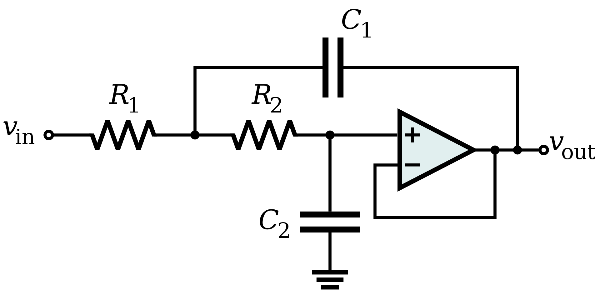
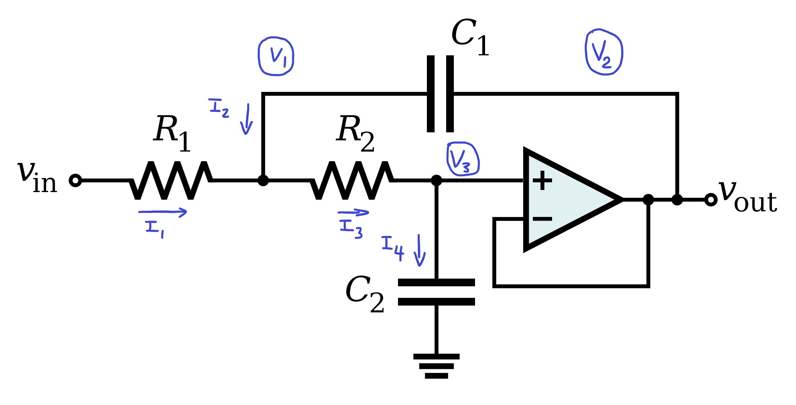
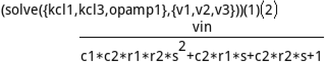
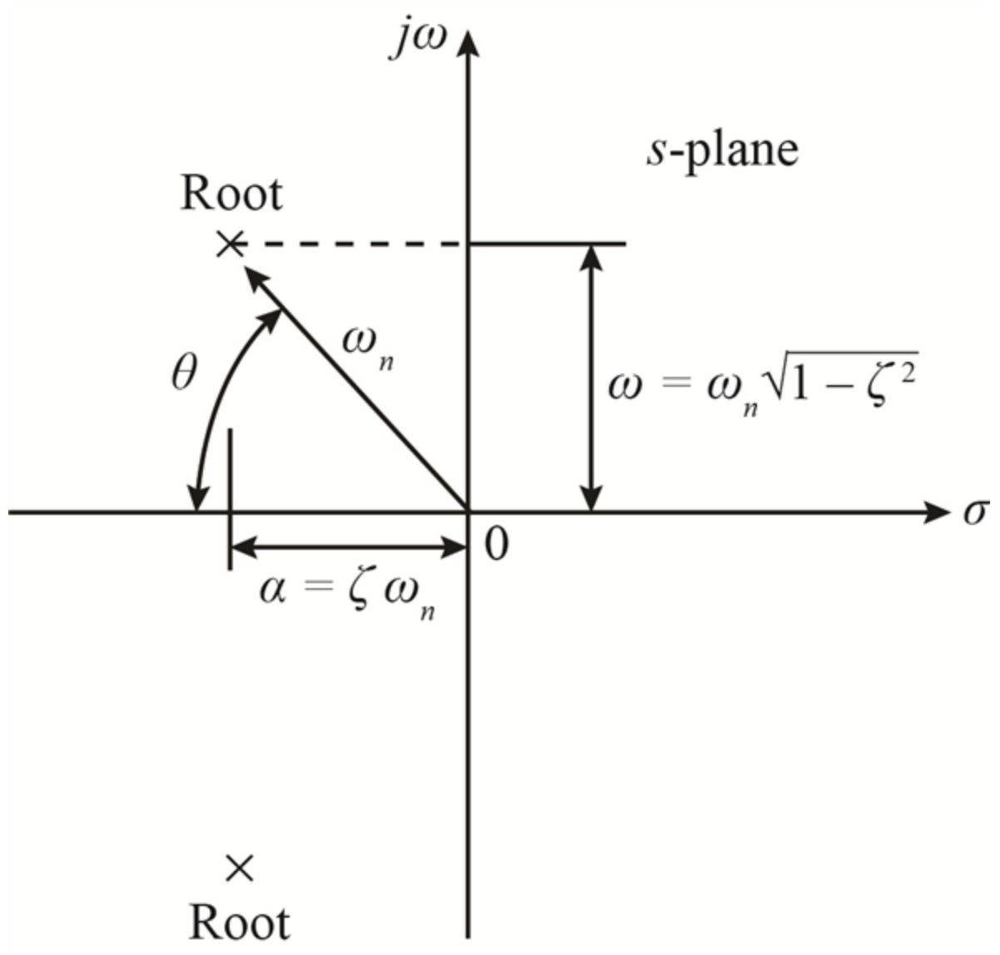
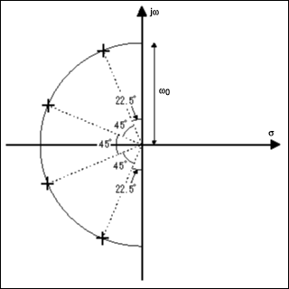

October, 2025

The Sallen-Key filter is a common topology of active filter. This is a worked example of the derivation of a low-pass filter using this topology, mostly in the way that was shown in UBC's ELEC202 2025W class.
First, we can solve the circuit using modified nodal analysis. First we draw out all of the currents that flow into each node (which is defined as a junction of three or more connections). We then come up with equations for the currents in and out of each node. For capacitors and inductors, we will use the Laplace method (e.g. \( I_{C} = \frac{V}{ \frac{1}{sC} } = V s C \), and \( I_{L} = \frac{V}{sL} \) ).
I first labelled the voltages (circled) and currents.

Then we can write equations for the currents.
\( I_1 = \frac{V_{in} - V_1}{R_1} \)
\( I_2 = sC_1 (V_2 - V_1) \)
\( I_3 = \frac{V_1 - V_3}{R_2} \)
\( I_4 = sC_2 (V_3) \)
Now we can write equations that satisfy KCL at each node. For the op-amp's output node, we don't do KCL because it doesn't really give us any information, but assuming closed-loop operation, the op-amp's two inputs will necessarily be at the same voltage, so we can get one more equation this way.
\( \sum{I_{in}} = \sum{I_{out}} \)
KCL1: \( I_1 + I_2 = I_3 \)
KCL2: not applicable
KCL3: \( I_3 = I_4 \)
OPAMP1: \( V_2 = V_3 \)
So now even though KCL2 doesn't do anything, we have three unknowns (the three voltages), and three valid equations. Now, we can plug this into a matrix or use CAS to solve this easily. Actually for the purposes of analysing the transfer function, we only need the ratio of \( \frac{V_{in}}{V_{out}}\), so here we only need \(V_2\).

I plugged these equations into the HP Prime's CAS solver. Since we only need the ratio of \( \frac{V_{in}}{V_{out}}\), we can divide the whole thing by \(V_{in}\), so our transfer function turns into:
\( H(s) = \frac{1}{C_1 C_2 R_1 R_2 s^2 + (C_2 R_1 + C_2 R_2) s + 1} \)
Now we have the transfer function, and we can find its poles, or the zeros of the denominator. We do that by solving
\( denom(H(s)) = 0 \)
AKA
\( C_1 C_2 R_1 R_2 s^2 + (R_1 + R_2) C_2 s + 1 = 0 \)
Then to solve for the poles, we should normalize the leading \( s^2 \) term to have a coefficient of 1, and then fit it to the standard form for a second order transfer function, which is:
\( s^2 + 2 \zeta \omega_0 s + \omega_0^2 \)
And our denominator:
\( s^2 + \frac{(R_1 + R_2) C_2 s}{C_1 C_2 R_1 R_2} + \frac{1}{C_1 C_2 R_1 R_2} \)
So from that, we can tell that \( \omega_0 = \frac{1}{\sqrt{C_1 C_2 R_1 R_2}}\).
And that \( \zeta = \frac{(R_1 + R_2)C_2}{2 \sqrt{C_1 C_2 R_1 R_2}} \).
Here, \( \omega_0 \) is the undamped natural frequency of the pole, and \( \zeta \) is the damping factor.

If the poles are plotted on the complex plane, the radius from the origin is equal to the undamped natural frequency of the pole, and the damping factor is basically the cosine of the angle from the real axis.
For this example, the two poles will be complex conjugates of eachother, so they will have the same \( \omega_0 \) and \( \zeta \).
For the purposes of actually designing a filter, it would be helpful to be able to go reverse the formulas for \( \omega_0 \) and \( \zeta \), so that if we specify them, we can get values for \( R_1 \), \( R_2 \), \( C_1 \), and \( C_2 \). As you may notice though, we have four unknowns and only two equations. This means that we have two undetermined variables which we can decide arbitrarily.
As for these two variables, though it would be useful in some cases to set the two capacitors equal so that only the resistors need to be special values, it turns out that you cannot get \( \zeta < 1\), or an underdamped response in this configuration.
We can however set the two resistors equal and specify them. I guess this is less useful than with the capacitors, since I imagine it is easier to find oddly specific resistor values rather than capacitor values, but I guess this is okay too.
Now we can gather our four equations for four unknowns. For the record, our inputs are:
Equations:
\( \omega_0 = \frac{1}{\sqrt{C_1 C_2 R_1 R_2}} \)
\( \zeta = \frac{(R_1 + R_2)C_2}{2 \sqrt{C_1 C_2 R_1 R_2}} \)
\( R_1 = R_2 \)
\( R = \text{value}\)
If we now plug it into the calculator, we get:
\( R_1 = R_2 = R\)
\( C_1 = \frac{1}{\omega_0 R \zeta} \)
\( C_2 = \frac{\zeta}{\omega_0 R} \)
This basically concludes the analysis of a second order, unity gain, Sallen-Key low pass filter.
A butterworth filter has a maximally flat passband, and the tradeoff is that it has a less steep roll-off as it transitions into the stopband. This is kind of the only filter type that we went into detail in ELEC 202, but basically, it is defined by having poles arranged in a half-circle on the lefthand side of the complex plane. The angle between the poles in degrees is equal to \( \frac{180}{\text{order}} \), and the arrangement of poles is symmetrical when reflected across the real axis.
Here is a picture that makes that clear. The depicted filter is a 4th order butterworth.

Since the Sallen-Key filter is second order, if we want a higher order filter, we can cascade multiple stages of these. The op-amp's output impedance is ideally zero, which makes cascading them very simple, and the transfer function is simply the product of the individual ones. Basically, unlike cascading passive LC filters, the op-amp makes it so that later stages do not change the earlier stage's transfer function. Anyways, each Sallen-Key stage will have two poles, which are complex conjugates of eachother, so you can probably see what each stage's poles should be.
To be concrete, if you want an N-th order Butterworth Sallen-Key filter, you should do the following:
I think it is easier to just show you some Python code that does this rather than try to explain it, so basically, either run the code below or read it as pseudocode and do the calculations manually.
import numpy as np def print_butterworth_lowpass_values(order, cutoff_hz, resistance): if order % 2 > 0: print("Cannot have odd orders for Sallen-Key") return delta_angle = np.pi / order # do this in radians here omega_0 = 2 * cutoff_hz * np.pi for i in range(int(order / 2)): angle = (0.5 + i) * delta_angle zeta = np.cos(angle) c1 = 1 / (omega_0 * resistance * zeta) c2 = zeta / (omega_0 * resistance) print(f"Stage {i + 1}: C1 = {c1}, C2 = {c2}, R1 = R2 = {resistance}")
Or you can run it here on OnlineGDB.
Now, you should be able to just plug all the values into a Sallen-Key filter and it should give you a nice flat butterworth passband.